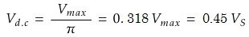
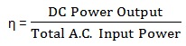
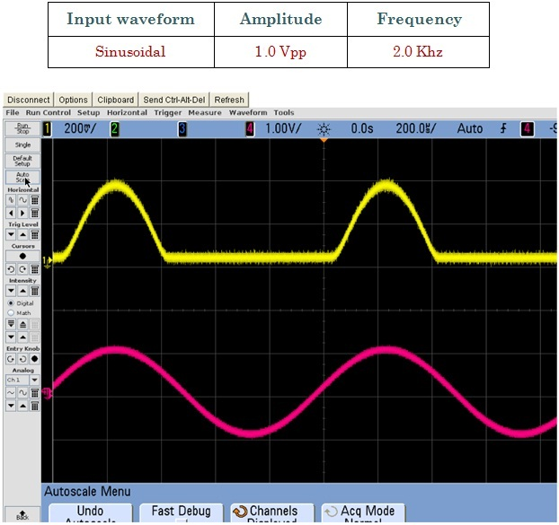
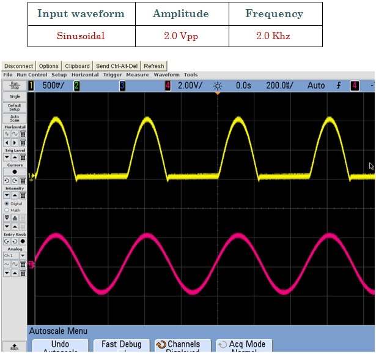
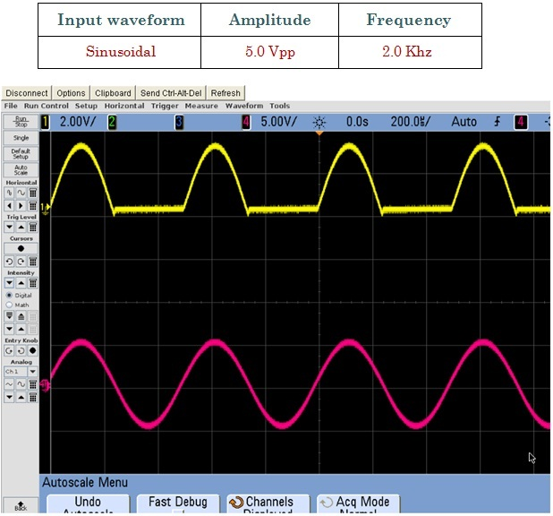

Introduction
Theory
Calculations
Components
Procedure
Live Experiment
Questionnair
Video Tutorial
Half Wave Rectifier
Calculations & Observations

Where V
max
is the maximum or peak voltage value of the AC sinusoidal supply, and V
S
is the RMS (Root Mean Squared) value of the supply.
Efficiency of Rectification (η):

For a half wave rectifier η ~ 0.406 = 40.6 %

Fig.1 hows Input Signal (Red) and Output Signal (Yellow) of Half Wave Rectifier

Fig.2 Shows Input Signal (Red) and Output Signal (Yellow)

Fig.3 Shows Input Signal (Red) and Output Signal (Yellow)